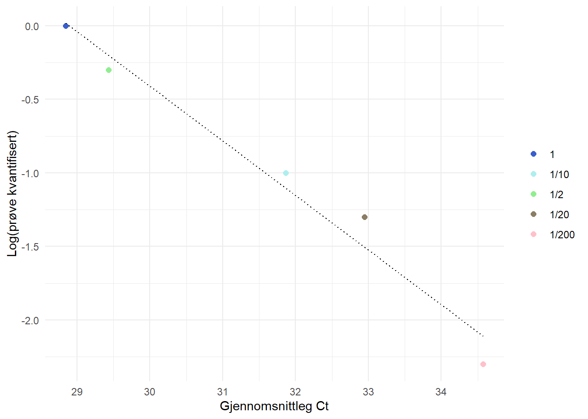

| 1 | 2a | 3a | 4a | 2b | 3b | 4b |
|---|---|---|---|---|---|---|
| 1 | 1/10 | 1/100 | 1/1000 | 1/2 | 1/20 | 1/200 |
| 30µl | 2µl | 2µl | 2µl | 10µl | 2µl | 2µl |
| 0µl | 18µl | 18µl | 18µl | 10µl | 18µl | 18µl |
7 Molekylærlabb rapport
7.1 Introduksjon
Analyse av genuttrykk gjennom fluoresensbasert sanntids kvantitativ polymerasekjedereaksjon (qPCR) er ein veletablert praksis brukt i ulike treningsstudier (Kuang and Bishop 2023). qPCR vert brukt til å måle uttrykket av eit målgen i prøver frå vev som blod og muskel. Ein vanleg applikasjon innan treningsfysiologi er måling av treningsinduserte endringar i genuttrykk knytt til ulike muskelfiber-typar. Sjølv om denne typen analyse er mykje brukt, finst det mange protokollar og metodar for å gjennomføre analysen. Reproduserbarheita og pålitelegheita av dataa avhenger i stor grad av korleis eksperimenta blir utført og tolka. For å sikre pålitelege testresultat, er det viktig å følgje ein detaljert og nøye utforma protokoll (Kuang and Bishop 2023).
Prinsippet bak ein qPCR-analyse er å overvåke PCR i sanntid. For å utføre PCR, må vi først trekke ut RNA frå eit biologisk celleprøve. RNA blir deretter omdanna til cDNA i ein prosess kalla revers transkripsjon. PCR blir deretter brukt til å amplifisere dette cDNA-et til milliardar av kopiar (Kuang and Bishop 2023). Kvar syklus i PCR består av tre steg for å kopiere DNA. I første steg (denaturering) blir DNA-et utsett for høge temperaturar for å skilje det frå dobbeltstrenga til enkelstrenga. I andre steg (annealing) blir temperaturen senka, og primerar bind seg til malstrengene. I det siste steget (elongering) aukar temperaturen igjen, og DNA-polymerasar bind seg til primerane og syntetiserer nytt dobbeltstranda DNA, identisk med utgangspunktet (Kuang and Bishop 2023). Denne syklusen blir deretter repetert, og DNA-et dobler seg eksponentielt med kvar runde. I ein qPCR som bruker SYBR Green-metoden, blir DNA-et bunde til ein fluorescerande markør under kvar syklus, noko som gjer at PCR-prosessen kan overvåkast i sanntid ved å fange fluorescensen etter kvar syklus (Kuang and Bishop 2023). Mengda cDNA og fluorescens dobles med kvar syklus, og fluorescenssignalet aukar eksponentielt. Kor raskt fluorescenssignalet når ein sett terskel, kjent som syklusterskelen (CT), bestemmer genuttrykksnivået. Jo færre syklar som trengs for å nå CT, desto høgare er uttrykket av målgenet i prøva (Livak and Schmittgen 2001).
MHC står for Myosin Heavy Chain, som refererer til proteinkomponenten i myosin, ein motorprotein avgjerande for muskelkontraksjon. Det finst fleire typar MHC som svarar til ulike muskelfiber-typar, som:
MHC1 (Type I): Finnes i langsamt kontraherande muskelfiber som er meir uthaldande.
MHC2a (Type IIa): Finnes i raskt kontraherande fiber som er motstandsdyktige mot trettheit og brukt i moderat langvarige aktivitetar.
MHC2x (Type IIx): Finnes i raskt kontraherande fiber som er meir kraftige, men trettast raskt.
Endringar i uttrykket av desse MHC-isoformene kan indikere tilpassingar i samansetjing av muskelfiber, ofte som resultat av trening eller intervensjonar.
7.2 Metode
7.2 Materiale
- Ein sanntids PCR-maskin (vi brukar QuantStudio 5)
- Ei qPCR-reaksjonsplate
- Nucleasfritt vatn og pipette-spissar
- SYBR-green Master Mix
Før eksperimentet forberedde laboratorieansvarleg cDNA-et, som blei trekt ut frå prøver samla under ein studie der deltakarar gjennomførte eit to veker langt styrketreningsprogram.
Fyrst laga vi ein fortynningsserie for å teste primerane Table 7.1. Vi flytta 2µl frå rør 1 til rør 2a, og 10µl frå 1 til 2b, og vortexa rør 2a og 2b slik at prøva og vatn (H2O) blei blanda. Deretter flytta vi 2µl frå 2a til 3a og 2µl frå 2b til 3b, og vortexa rør 3a og 3b. Til slutt flytta vi 2µl frå 3a til 4a og 2µl frå 3b til 4b, og vortexa rør 4a og 4b.
Vi kombinerte deretter ein master-miks som bestod av 250µl SYBR-green, 50µl primer-miks (MHC1, MHC2a, MHC2x, eller MHCb2m) og 100µl H2O. Deretter lasta vi plate med primer-spesifikk master-miks etter pipetteringsskjemaet vårt Table 7.2. 8µl av master-miksen blei lagt i brønnene saman med 2µl cDNA-prøve.
| row | 13 | 14 | 15 | 16 | 17 | 18 | 19 | 20 | 21 | 22 | 23 |
|---|---|---|---|---|---|---|---|---|---|---|---|
| Fp1 | Fp2 | ||||||||||
| A | myhc 1 | myhc 1 | cmyc 1 | cmyc 2a | cmyc 3a | cmyc 4a | cmyc 2b | cmyc 3b | cmyc 4b | ||
| B | myhc 1 | myhc 1 | cmyc 1 | cmyc 2a | cmyc 3a | cmyc 4a | cmyc 2b | cmyc 3b | cmyc 4b | ||
| C | myhc 1 | myhc 1 | cmyc 1 | cmyc 2a | cmyc 3a | cmyc 4a | cmyc 2b | cmyc 3b | cmyc 4b | ||
| D | myhc 2a | myhc 2a | |||||||||
| E | myhc 2a | myhc 2a | |||||||||
| F | myhc 2a | myhc 2a | |||||||||
| G | myhc 2x | myhc 2x | |||||||||
| H | myhc 2x | myhc 2x | |||||||||
| I | myhc 2x | myhc 2x | |||||||||
| J | myhc | myhc | cmyc 1 | cmyc 2a | cmyc 3a | cmyc 4a | cmyc 2b | cmyc 3b | cmyc 4b | ||
| K | myhc | myhc | cmyc 1 | cmyc 2a | cmyc 3a | cmyc 4a | cmyc 2b | cmyc 3b | cmyc 4b | ||
| L | myhc | myhc | cmyc 1 | cmyc 2a | cmyc 3a | cmyc 4a | cmyc 2b | cmyc 3b | cmyc 4b |
Plata blei deretter dekt med plast og sentrifugert ved 1200rpm i 1 minutt. PCR-prøvene blei analysert ved hjelp av sanntids PCR (Applied Biosystems 7500 Fast Real-Time PCR System, Life Technologies AS) og QuantStudio programvara (Applied Biosystems, Waltham, MA, USA). PCR-prosessen bestod av tre fasar: ein ‘Hold’-fase, ein ‘PCR’-fase, og ein ‘Melt curve’-fase. I første steg auka temperaturen med 1,99°C/s til 50°C, der ho blei konstant i 2 minutt. Deretter auka temperaturen med 1,99°C/s til 95°C, der ho blei konstant i 2 minutt. Deretter starta den faktiske PCR-prosessen som bestod av 40 syklar. Éin syklus innebar 1 sekund på 95°C, deretter sank temperaturen med 1,77°C/s til 60°C, der ho blei konstant i 30 sekund. Etter kvar syklus blei eit bilde av fluorescensen i brønnene teke. Til slutt auka temperaturen med 1,99°C/s til 95°C og blei konstant i 15 sekund. Deretter sank temperaturen med 1,77°C/s til 60°C, der ho blei konstant i 1 minutt. Temperaturen auka deretter med 0,15°C/s til 95°C, der ho blei konstant i 15 sekund. Etter at PCR-prosessen var avslutta, henta vi resultata i form av CT-verdier.
7.3 Resultat
| Dilution | Ct1 | Ct2 | Ct3 | Avg.Ct | Sample.quan | Log...sample.quan. | Slope | Primer.Efficiency.... |
|---|---|---|---|---|---|---|---|---|
| 1 | 28.678 | 28.708 | 29.155 | 28.847 | 1.000 | 0.000 | -2.6104 | 141.5901 |
| 1/2 | 29.414 | 29.62 | 29.264 | 29.433 | 0.500 | -0.301 | ||
| 1/10 | 31.776 | 31.416 | 32.413 | 31.868 | 0.100 | -1.000 | ||
| 1/20 | 33.241 | 32.653 | Undetermined | 32.947 | 0.050 | -1.301 | ||
| 1/200 | Undetermined | Undetermined | 34.574 | 34.574 | 0.005 | -2.301 |
| Pooled.sam | Avg | SD | CV |
|---|---|---|---|
| 1.0 | 28.847 | 0.2670490 | 0.93 % |
| 0.5 | 29.433 | 0.1788764 | 0.61 % |
| 0.1 | 31.868 | 0.5050010 | 1.58 % |
Ein stigning på -2,6 indikerer at primer-effektiviteten ikkje er optimal, då det er kalkulert til å vere 142%. Vi ser at observasjonen vår ikkje er lineær Figure 7.1.

Standardavviket er relativt lågt for fortynningane i den “sammenslåtte prøven”, som indikerer presisjon i resultata. Standardfeilen er lågast for den 1/2 fortynna prøva på 0,61% og høgast for den 1/10 fortynna prøva på 1,58%. Dette tyder på at det er større variasjon mellom målingane for dei mest fortynna prøvene. I tillegg er standardfeilen for den ufortynna prøva høgare enn for den 1/2 fortynna prøva.
| Prøve_namn | Mål_gen | Ct1 | Ct2 | Ct3 | Gjennomsnitt | Refereanse_gen | Ref_Ct1 | Ref_Ct2 | Ref_Ct3 | Ref_Gjennomsnitt | Delta_Ct | To_Delta_Delta_Ct |
|---|---|---|---|---|---|---|---|---|---|---|---|---|
| FP6 R v0 | MYHC1 | 19.798 | 19.901 | 19.621 | 19.77333 | b2m | 24.670 | 24.513 | 24.691 | 24.625 | -4.851 | 28.867 |
| FP6 R v2pre | MYCH1 | 18.944 | 19.240 | 19.861 | 19.34833 | b2m | 22.913 | 23.950 | 23.819 | 23.561 | -4.212 | 18.536 |
| FP6 R v0 | MHC2a | 21.029 | 21.247 | 20.627 | 20.96800 | b2m | 24.670 | 24.513 | 24.691 | 24.625 | -3.657 | 12.613 |
| FP6 R v2pre | MHC2a | 19.549 | 19.304 | 19.580 | 19.47800 | b2m | 22.913 | 23.950 | 23.819 | 23.561 | -4.083 | 16.944 |
| FP6 R v0 | MYHC2x | 27.019 | 26.898 | 25.907 | 26.60795 | b2m | 24.670 | 24.513 | 24.691 | 24.625 | 1.983 | 0.253 |
| FP6 R v2pre | MYHC2x | 24.871 | 24.105 | 24.256 | 24.41062 | b2m | 22.913 | 23.950 | 23.819 | 23.561 | 0.850 | 0.555 |
I tabell 7.5 kan vi sjå at talet på syklar for å nå syklusterskelen (CT) har endra seg frå veke 0 til veke 2. Talet på syklar minkla for myhc1 frå eit gjennomsnitt på 19,7 til 19,3 syklar. For myhc2a gjekk syklane ned frå 20,9 til 19,4, og for myhc2x gjekk det frå 26,6 til 24,4 syklar. Dette indikerer at genuttrykket auka frå veke 0 til veke 2, då færre syklar indikerer høgare genuttrykk (Livak og Schmittgen, 2001).
| 100% | MYHC1 | MYHC2a | MYHC2x |
|---|---|---|---|
| 41.733 | 69.17 % | 30.22 % | 0.61 % |
| 36.034 | 51.44 % | 47.02 % | 1.54 % |
I tabell 7.6 kan vi sjå at mengda genuttrykk for dei ulike muskelfiber-typane har endra seg frå veke 0 til veke 2. Uttrykket av Muskel Fiber Type
7.4 Diskusjon
(Wilborn and Willoughby 2004) sa
Kuang, Xu Yan, Jujiao, and David J. Bishop. 2023. “Evaluation of Iron Status in Non-Dialysis Chronic Kidney Disease Patients.” Journal of Diabetic Association Medical College, Faridpur 7 (2): 22–26.
Livak, K J, and T D Schmittgen. 2001. “Analysis of Relative Gene Expression Data Using Real-Time Quantitative PCR and the 2(-Delta Delta C(T)) Method.” Methods 25 (4): 402–8.
Wilborn, Colin D, and Darryn S Willoughby. 2004. “The Role of Dietary Protein Intake and Resistance Training on Myosin Heavy Chain Expression.” J. Int. Soc. Sports Nutr. 1 (2): 27–34.